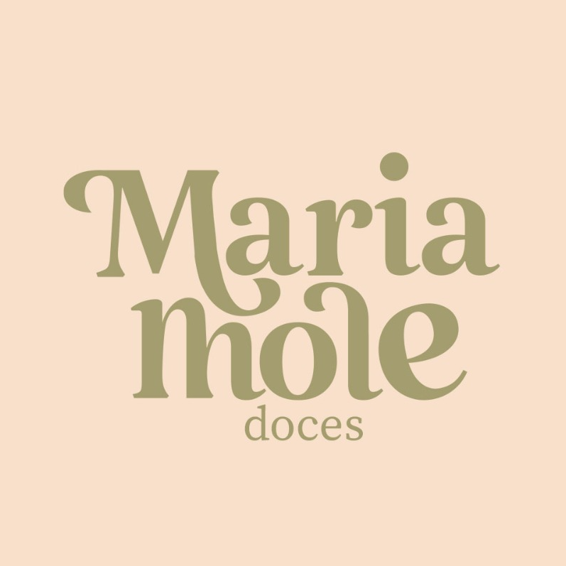
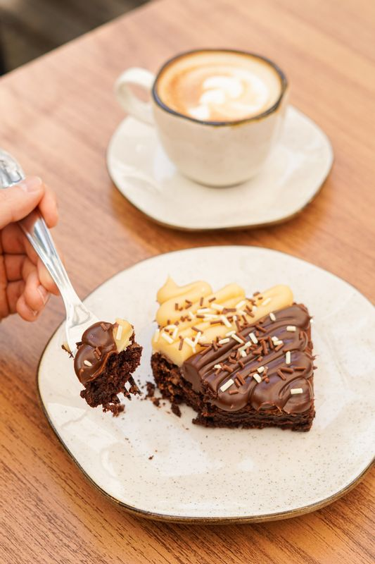
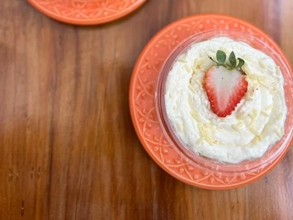
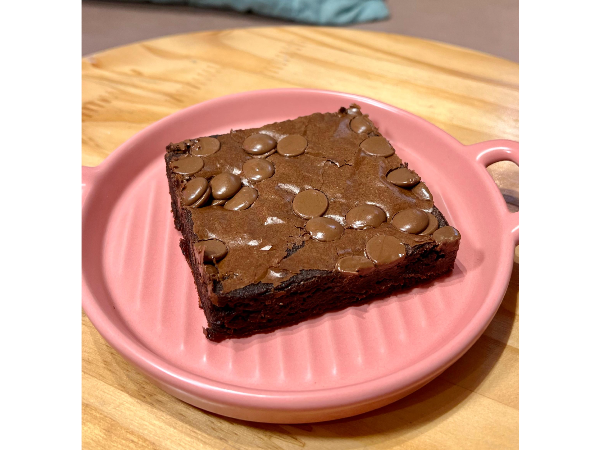

Brownie Duo
Brownie com gotinhas de chocolate e cobertura de brigadeiro preto e ninho.
R$ 22,00
Pedir agoraDoces, bolos e salgados preparados para a pausa de hoje e para as celebrações que merecem ser lembradas.



Produtos e preços mostrados abaixo vêm do catálogo público atual. O pedido continua no canal já utilizado pela Maria Mole.
Brownie com gotinhas de chocolate e cobertura de brigadeiro preto e ninho.
R$ 22,00Mousse de chocolate branco e baunilha, gotas de brigadeiro e camadas de biscoito.
R$ 24,00Brownie tradicional com gotinhas de chocolate meio amargo.
R$ 20,00Descubra o que está disponível hoje no cardápio online e conclua o pedido no fluxo já utilizado pela loja.
Organize doces, bolos e presentes para datas especiais com antecedência e clareza.
Uma rota dedicada para itens que acompanham recados, comemorações e pequenos gestos.
Esta proposta não substitui a operação de pedidos: ela valoriza os produtos, ajuda o cliente a escolher e conduz para o catálogo atual.
Abrir cardápio atual